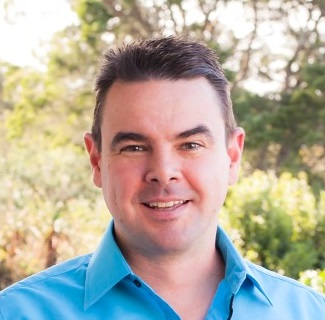

Mark Roy Kirkness

Introduction
I am a hard working problem solver who is excited by new challenges.
I am married without children. My wife is my best friend.
I created this page as one of my first assignments in my web development course.
Education
- Bachelor of Science (Civil Engineering) : University of Natal, South Africa (1993-1996)
Work Experience
- Project Manager - B&T Steel (October 2022 - August 2023)
- Managed structural steel supply and erection projects
- Contract Manager - Davidoff Project & Development Management (July 2021 - July 2022)
- Construction of the NTT JOH1 Data Centre
- Construction Manager - Gothic Construction (September 2018 - November 2020)
- New warehouse unit - Westlake, Johannesburg
- Christian Family Church Renovation - Boksburg, Johannesburg
- New mini-warehouse units - Longlakes, Johannesburg
- Project Manager - BTS Project Management Services (October 2014 - August 2018)
- Tenant coordination - Dainfern Square Shopping Centre construction
- Markram House residential conversion - Johannesburg
- Ingram House residential conversion - Hillbrow
- Bassonia shopping centre upgrades
- Various Woolworth upgrades and new builds
- Director of Operations - Interocean Logistics (May 2012 - April 2014)
- Transport logistics
- Client liaison and coordination
- Aurecon (November 2007 - April 2012)
- Structural design office
- Site management and inspection roles
- Lift structure designs in live shopping centres
- Project management office
- Soyo base design coordination
- Plettenberg Bay New Magistrates Courts design coordination
- Site Manager - Barratt Homes Ltd (West London) (May 2004 - August 2007)
- Feltham Town Centre redevelopment
- Managed all trades (electrical substation, lifts, concrete, screed, drywall, plaster, mechanical and electrical, joinery, tiling, fitout, painting, appliance installation)
- Site Manger - St George Central London Ltd
- Imperial Wharf - Block A
- Managed all trades (concrete, screed, drywall, plaster, mechanical and electrical, joinery, tiling, fitout, painting, appliance installation)
- Setting Out Engineer - Norwest Holst Construction Ltd (March 2000 - April 2001)
- Setting out concrete structures - Channel Tunnel Rail Link
- Engineer in Training - Pietermaritzburg/Msunduzi Transitional Local Council (February 1997 - January 2000)
Additional Skills
- Udemy - PostreSQL Bootcamp (2024)
- Udemy - Full Stack Development Course (December 2024 - ongoing)
- HTML
- CSS - in progress
- Flexbox - Upcoming
- Grid - Upcoming
- Bootstrap - Upcoming
- Web design- upcoming
- Javascript - Upcoming
- Document Object Model - upcoming
- Backend web development - upcoming
- Node - upcoming
- And much more....
Awards and Achievements
- 2006: Barratt Homes - Site Manager of the Quarter (West London)
- 2009: Damelin - Short Programe in Advanced Project Management (Distinction)
Interests & Hobbies
Contact Me